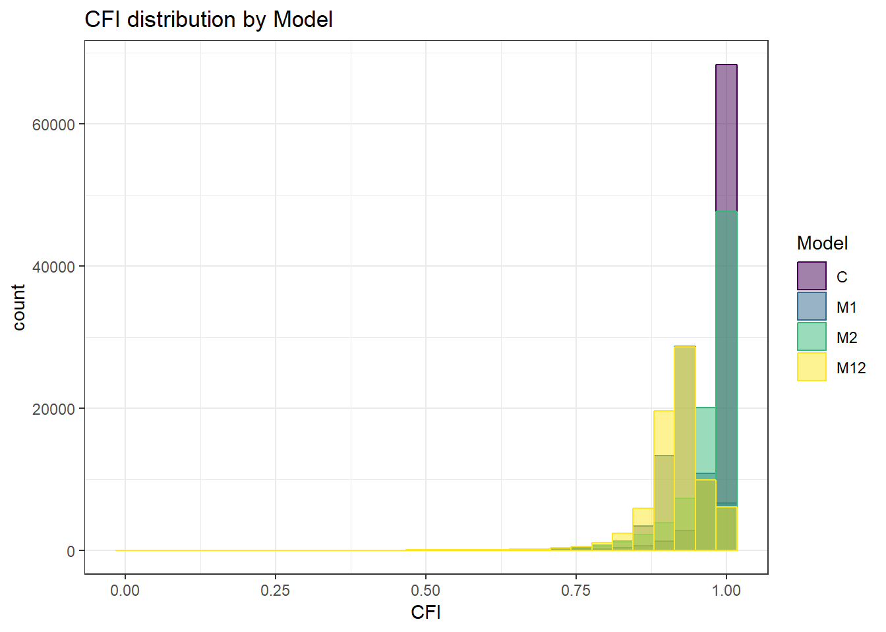

ANOVA and ROC Analysis
noah-padgett
2019-05-07
Last updated: 2019-05-17
Checks: 6 0
Knit directory: mcfa-fit/
This reproducible R Markdown analysis was created with workflowr (version 1.3.0). The Checks tab describes the reproducibility checks that were applied when the results were created. The Past versions tab lists the development history.
Great! Since the R Markdown file has been committed to the Git repository, you know the exact version of the code that produced these results.
Great job! The global environment was empty. Objects defined in the global environment can affect the analysis in your R Markdown file in unknown ways. For reproduciblity it’s best to always run the code in an empty environment.
The command set.seed(20190507) was run prior to running the code in the R Markdown file. Setting a seed ensures that any results that rely on randomness, e.g. subsampling or permutations, are reproducible.
Great job! Recording the operating system, R version, and package versions is critical for reproducibility.
Nice! There were no cached chunks for this analysis, so you can be confident that you successfully produced the results during this run.
Great! You are using Git for version control. Tracking code development and connecting the code version to the results is critical for reproducibility. The version displayed above was the version of the Git repository at the time these results were generated.
Note that you need to be careful to ensure that all relevant files for the analysis have been committed to Git prior to generating the results (you can use wflow_publish or wflow_git_commit). workflowr only checks the R Markdown file, but you know if there are other scripts or data files that it depends on. Below is the status of the Git repository when the results were generated:
Ignored files:
Ignored: .Rhistory
Ignored: .Rproj.user/
Untracked files:
Untracked: .RDataTmp
Unstaged changes:
Modified: analysis/about.Rmd
Modified: analysis/fit_boxplots.Rmd
Modified: analysis/index.Rmd
Modified: analysis/roc_analyses.Rmd
Deleted: docs/.nojekyll
Note that any generated files, e.g. HTML, png, CSS, etc., are not included in this status report because it is ok for generated content to have uncommitted changes.
These are the previous versions of the R Markdown and HTML files. If you’ve configured a remote Git repository (see ?wflow_git_remote), click on the hyperlinks in the table below to view them.
| File | Version | Author | Date | Message |
|---|---|---|---|---|
| Rmd | 29e10f8 | noah-padgett | 2019-05-07 | updated analyses and site information |
| html | 29e10f8 | noah-padgett | 2019-05-07 | updated analyses and site information |
Purpose of this file:
- Conduct ANOVA’s to get effect size study design on fit indices
- Conduct ROC Analysies
The output is numerous .eps files (figures) and code for tables in latex
Packages and Set-Up
## Chunk iptions
knitr::opts_chunk$set(out.width = "225%")
# setwd('C:/Users/noahp/Dropbox/MCFA Thesis/Code Results')
## Packages General Packages
library(tidyverse)-- Attaching packages ---------------------------------------------- tidyverse 1.2.1 --v ggplot2 3.1.0 v purrr 0.2.5
v tibble 2.0.1 v dplyr 0.8.0.1
v tidyr 0.8.2 v stringr 1.3.1
v readr 1.3.1 v forcats 0.3.0 Warning: package 'dplyr' was built under R version 3.5.3-- Conflicts ------------------------------------------------- tidyverse_conflicts() --
x dplyr::filter() masks stats::filter()
x dplyr::lag() masks stats::lag()library(car)Loading required package: carData
Attaching package: 'car'The following object is masked from 'package:dplyr':
recodeThe following object is masked from 'package:purrr':
somelibrary(psych)
Attaching package: 'psych'The following object is masked from 'package:car':
logitThe following objects are masked from 'package:ggplot2':
%+%, alpha# Formatting and Tables
library(kableExtra)
Attaching package: 'kableExtra'The following object is masked from 'package:dplyr':
group_rowslibrary(xtable)
# For plotting
library(ggplot2)
theme_set(theme_bw())
# Data manipulating
library(dplyr)
# ROC Analysis
library(pROC)Type 'citation("pROC")' for a citation.
Attaching package: 'pROC'The following objects are masked from 'package:stats':
cov, smooth, var## One global parameter for printing figures
save.fig <- F
## Load up the functions needed for ANOVA and Assumption checking
source("code/r_functions.R")Data Management
sim_results <- as_tibble(read.table("data/compiled_fit_results.txt", header = T,
sep = "\t"))
## Next, turn condition into a factor for plotting
sim_results$Condition <- as.factor(sim_results$Condition)
## Next, since TLI is non-normed, any value greater than 1 needs to be
## rescaled to 1.
sim_results$TLI <- ifelse(sim_results$TLI > 1, 1, sim_results$TLI)
sim_results$TLI <- ifelse(sim_results$TLI < 0, 0, sim_results$TLI)
## Next, summarize the results of the chi-square test of model fit. This is
## done simply by comparing the p-value to alpha (0.05) and indicating
## whether the model was flagged as fitting or not. Note: if p < 0.05 then
## this variable is flagged as 0, and 1 otherwise
sim_results$Chi2_pvalue_decision <- ifelse(sim_results$chisqu_pvalue > 0.05,
1, 0)
# 0 = rejected that these data fit this model 1 = failed to reject that
# these data fit this model
## Need to make codes for the ROC analyses outcomes first, C vs. M1,M2,M12 -
## Perfect specification
sim_results$C <- ifelse(sim_results$Model == "C", 1, 0)
# second, C|M2 vs. M1|M12- correct level 1 model
sim_results$C_Level_1 <- ifelse(sim_results$Model == "C" | sim_results$Model ==
"M2", 1, 0)
# third, C|M1 vs. M2|M12- correct level 2 model
sim_results$C_Level_2 <- ifelse(sim_results$Model == "C" | sim_results$Model ==
"M1", 1, 0)Adding Labels to Conditions
Currently, each condition is kind of like a hidden id that we don’t know what the actual factor is. So, first thing isto create meaningful labels for us to use. Remember, the 72 conditions for the this study were
- Level-1 sample size (5, 10, 30)
- Level-2 sample size (30, 50, 100, 200)
- Observed indicator ICC (.1, .3, .5)
- Latent variable ICC (.1, .5)
## level-1 Sample size
ss_l1 <- c(5, 10, 30) ## 6 conditions each
ss_l2 <- c(30, 50, 100, 200) ## 18 condition each
icc_ov <- c(.1, .3, .5) ## 2 conditions each
icc_lv <- c(.1, .5) ## every other condition
nCon <- 72 # number of conditions
nRep <- 500 # number of replications per condition
nMod <- 12 ## numberof estimated models per conditions
## Total number of rows: 432,000
ss_l2 <- c(rep(ss_l2[1], 18*nRep*nMod), rep(ss_l2[2], 18*nRep*nMod), rep(ss_l2[3], 18*nRep*nMod), rep(ss_l2[4], 18*nRep*nMod))
ss_l1 <- rep(c(rep(ss_l1[1],6*nRep*nMod), rep(ss_l1[2],6*nRep*nMod), rep(ss_l1[3],6*nRep*nMod)), 4)
icc_ov <- rep(c(rep(icc_ov[1], 2*nRep*nMod), rep(icc_ov[2], 2*nRep*nMod), rep(icc_ov[3], 2*nRep*nMod)), 12)
icc_lv <- rep(c(rep(icc_lv[1], nRep*nMod), rep(icc_lv[2], nRep*nMod)), 36)
## Force these vectors to be column vectors
ss_l1 <- matrix(ss_l1, ncol=1)
ss_l2 <- matrix(ss_l2, ncol=1)
icc_ov <- matrix(icc_ov, ncol=1)
icc_lv <- matrix(icc_lv, ncol=1)
## Add the labels to the results data frame
sim_results <- sim_results[order(sim_results$Condition),]
sim_results <- cbind(sim_results, ss_l1, ss_l2, icc_ov, icc_lv)
## Force the conditions to be factors
sim_results$ss_l1 <- as.factor(sim_results$ss_l1)
sim_results$ss_l2 <- as.factor(sim_results$ss_l2)
sim_results$icc_ov <- as.factor(sim_results$icc_ov)
sim_results$icc_lv <- as.factor(sim_results$icc_lv)
sim_results$Model <- factor(sim_results$Model, levels = c('C','M1','M2','M12'), ordered = T)
## Subset to the usable cases
sim_results <- filter(sim_results, Converge == 1 & Admissible == 1)ANOVA and effect sizes for distributional differences
One of the key outcomes for this large simulation was how the distribution of fit indices changes due to manipulating the design factor. So, for this simulation experiment, there were 6 factors systematically varied. Of these 6 factors, 4 were factors influencing the observed data and 2 were factors pertaining to estimation and model fitting. The factors were
- Level-1 sample size (5, 10, 30)
- Level-2 sample size (30, 50, 100, 200)
- Observed indicator ICC (.1, .3, .5)
- Latent variable ICC (.1, .5)
- Model specification (C, M1, M2, M12)
- Model estimator (MLR, ULSMV, WLSMV)
For each fit statistic, an analysis of variance (ANOVA) was conducted in order to test how much influence each of these design factors had on the distribution of the fit indice.
General Linear Model investigated for fit measures was: \[ Y_{ijklmno} = \mu + \alpha_{j} + \beta_{k} + \gamma_{l} + \delta_m + \zeta_n + \theta_o +\\ (\alpha\beta)_{jk} + (\alpha\gamma)_{jl}+ (\alpha\delta)_{jm} + (\alpha\zeta)_{jn} + (\alpha\theta)_{jo}+ \\ (\beta\gamma)_{kl}+ (\beta\delta)_{km} + (\beta\zeta)_{kn} + (\beta\theta)_{ko}+ (\gamma\delta)_{lm} +\\ (\gamma\zeta)_{ln} + (\gamma\theta)_{lo} +(\delta\zeta)_{mn} + (\delta\theta)_{mo} + (\zeta\theta)_{no} + \varepsilon_{ijklmno} \] where
- \(\mu\) is the grand mean,
- \(\alpha_{j}\) is the effect of Level-1 sample size,
- \(\beta_{k}\) is the effect of Level-2 sample size,
- \(\gamma_{l}\) is the effect of Observed indicator ICC,
- \(\delta_m\) is the effect of Latent variable ICC,
- \(\zeta_n\) is the effect of Model specification,
- \(\theta_o\) is the effect of Model estimator ,
- \((\alpha\beta)_{jk}\) is the interaction between Level-1 sample size and Level-2 sample size,
- \((\alpha\gamma)_{jl}\) is the interaction between Level-1 sample size and Observed indicator ICC,
- \((\alpha\delta)_{jm}\) is the interaction between Level-1 sample size and Latent variable ICC,
- \((\alpha\zeta)_{jn}\) is the interaction between Level-1 sample size and Model specification,
- \((\alpha\theta)_{jo}\) is the interaction between Level-1 sample size and Model estimator ,
- \((\beta\gamma)_{kl}\) is the interaction between Level-2 sample size and Observed indicator ICC,
- \((\beta\delta)_{km}\) is the interaction between Level-2 sample size and Latent variable ICC,
- \((\beta\zeta)_{kn}\) is the interaction between Level-2 sample size and Model specification,
- \((\beta\theta)_{ko}\) is the interaction between Level-2 sample size and Model estimator ,
- \((\gamma\delta)_{lm}\) is the interaction between Observed indicator ICC and Latent variable ICC,
- \((\gamma\zeta)_{ln}\) is the interaction between Observed indicator ICC and Model specification,
- \((\gamma\theta)_{lo}\) is the interaction between Observed indicator ICC and Model estimator ,
- \((\delta\zeta)_{mn}\) is the interaction between Latent variable ICC and Model specification,
- \((\delta\theta)_{mo}\) is the interaction between Latent variable ICC and Model estimator ,
- \((\zeta\theta)_{no}\) is the interaction between Model specification and Model estimator , and
- \(\varepsilon_{ijkl}\) is the residual error for the \(i^{th}\) observed fit measure.
Note that for most of these terms there are actually 2 or 3 terms actually estimated. These additional terms are because of the categorical natire of each effect so we have to create “reference” groups and calculate the effect of being in a group other than the reference group. Higher order interactions were omitted for clearity of interpretation of the model. If interested in higher-order interactins, please see Maxwell and Delaney (2004).
The real reason the higher order interaction was omitted: Because I have no clue how to interpret a 6-way interaction (whatever the heck that is), I am limiting the ANOVA to all bivariate interactions.
Diagnostics for factorial ANOVA:
- Independence of Observations
- Normality of residuals across cells for the design
- Homogeneity of variance across cells
Independence of observations is by design, where these data were randomly generated from a known population and observations are across replications and are independent. The normality assumptions is that the residuals of the models are normally distributed across the design cells. The normality assumption is tested by investigation by Shapiro-Wilks Test, the K-S test, and visual inspection of QQ-plots and histograms. The equality of variance is checked through Levene’s test across all the different conditions/groupings. Furthermore, the plots of the residuals are also indicative of the equality of variance across groups as there should be no apparent pattern to the residual plots.
Assumption Checking
CFI
## model factors...
flist <- c('ss_l1', 'ss_l2', 'icc_ov', 'icc_lv','Model', 'Estimator')
## Check assumptions
anova_assumptions_check(
sim_results, 'CFI', factors = flist,
model = as.formula('CFI ~ ss_l1 + ss_l2 + icc_ov + icc_lv + Model + Estimator + ss_l1:ss_l2 + ss_l1:icc_ov + ss_l1:icc_lv + ss_l1:Model + ss_l1:Estimator + ss_l2:icc_ov + ss_l2:icc_lv + ss_l2:Model + ss_l2:Estimator + icc_ov:icc_lv + icc_ov:Model + icc_ov:Estimator + icc_lv:Model + icc_lv:Estimator + Model:Estimator'))
=============================
Tests and Plots of Normality:
| Version | Author | Date |
|---|---|---|
| 29e10f8 | noah-padgett | 2019-05-07 |

| Version | Author | Date |
|---|---|---|
| 29e10f8 | noah-padgett | 2019-05-07 |

| Version | Author | Date |
|---|---|---|
| 29e10f8 | noah-padgett | 2019-05-07 |
Shapiro-Wilks Test of Normality of Residuals:
Shapiro-Wilk normality test
data: res
W = 0.78436, p-value < 2.2e-16
K-S Test for Normality of Residuals:Warning in ks.test(aov.out$residuals, "pnorm", alternative = "two.sided"):
ties should not be present for the Kolmogorov-Smirnov test
| Version | Author | Date |
|---|---|---|
| 29e10f8 | noah-padgett | 2019-05-07 |
One-sample Kolmogorov-Smirnov test
data: aov.out$residuals
D = 0.45839, p-value < 2.2e-16
alternative hypothesis: two-sided`stat_bin()` using `bins = 30`. Pick better value with `binwidth`.Warning: Removed 111 rows containing non-finite values (stat_bin).
| Version | Author | Date |
|---|---|---|
| 29e10f8 | noah-padgett | 2019-05-07 |
`stat_bin()` using `bins = 30`. Pick better value with `binwidth`.Warning: Removed 111 rows containing non-finite values (stat_bin).
| Version | Author | Date |
|---|---|---|
| 29e10f8 | noah-padgett | 2019-05-07 |
`stat_bin()` using `bins = 30`. Pick better value with `binwidth`.Warning: Removed 111 rows containing non-finite values (stat_bin).
| Version | Author | Date |
|---|---|---|
| 29e10f8 | noah-padgett | 2019-05-07 |
`stat_bin()` using `bins = 30`. Pick better value with `binwidth`.Warning: Removed 111 rows containing non-finite values (stat_bin).
| Version | Author | Date |
|---|---|---|
| 29e10f8 | noah-padgett | 2019-05-07 |
`stat_bin()` using `bins = 30`. Pick better value with `binwidth`.Warning: Removed 111 rows containing non-finite values (stat_bin).
| Version | Author | Date |
|---|---|---|
| 29e10f8 | noah-padgett | 2019-05-07 |
`stat_bin()` using `bins = 30`. Pick better value with `binwidth`.Warning: Removed 111 rows containing non-finite values (stat_bin).
| Version | Author | Date |
|---|---|---|
| 29e10f8 | noah-padgett | 2019-05-07 |
=============================
Tests of Homogeneity of Variance
Levenes Test: ss_l1
Levene's Test for Homogeneity of Variance (center = "mean")
Df F value Pr(>F)
group 2 3589.8 < 2.2e-16 ***
307264
---
Signif. codes: 0 '***' 0.001 '**' 0.01 '*' 0.05 '.' 0.1 ' ' 1
Levenes Test: ss_l2
Levene's Test for Homogeneity of Variance (center = "mean")
Df F value Pr(>F)
group 3 4957.8 < 2.2e-16 ***
307263
---
Signif. codes: 0 '***' 0.001 '**' 0.01 '*' 0.05 '.' 0.1 ' ' 1
Levenes Test: icc_ov
Levene's Test for Homogeneity of Variance (center = "mean")
Df F value Pr(>F)
group 2 27.465 1.183e-12 ***
307264
---
Signif. codes: 0 '***' 0.001 '**' 0.01 '*' 0.05 '.' 0.1 ' ' 1
Levenes Test: icc_lv
Levene's Test for Homogeneity of Variance (center = "mean")
Df F value Pr(>F)
group 1 1626.5 < 2.2e-16 ***
307265
---
Signif. codes: 0 '***' 0.001 '**' 0.01 '*' 0.05 '.' 0.1 ' ' 1
Levenes Test: Model
Levene's Test for Homogeneity of Variance (center = "mean")
Df F value Pr(>F)
group 3 4958.9 < 2.2e-16 ***
307263
---
Signif. codes: 0 '***' 0.001 '**' 0.01 '*' 0.05 '.' 0.1 ' ' 1
Levenes Test: Estimator
Levene's Test for Homogeneity of Variance (center = "mean")
Df F value Pr(>F)
group 2 4762.4 < 2.2e-16 ***
307264
---
Signif. codes: 0 '***' 0.001 '**' 0.01 '*' 0.05 '.' 0.1 ' ' 1
sessionInfo()R version 3.5.2 (2018-12-20)
Platform: x86_64-w64-mingw32/x64 (64-bit)
Running under: Windows 10 x64 (build 17134)
Matrix products: default
locale:
[1] LC_COLLATE=English_United States.1252
[2] LC_CTYPE=English_United States.1252
[3] LC_MONETARY=English_United States.1252
[4] LC_NUMERIC=C
[5] LC_TIME=English_United States.1252
attached base packages:
[1] stats graphics grDevices utils datasets methods base
other attached packages:
[1] pROC_1.13.0 xtable_1.8-3 kableExtra_1.0.1 psych_1.8.12
[5] car_3.0-2 carData_3.0-2 forcats_0.3.0 stringr_1.3.1
[9] dplyr_0.8.0.1 purrr_0.2.5 readr_1.3.1 tidyr_0.8.2
[13] tibble_2.0.1 ggplot2_3.1.0 tidyverse_1.2.1
loaded via a namespace (and not attached):
[1] Rcpp_1.0.0 lubridate_1.7.4 lattice_0.20-38
[4] assertthat_0.2.0 rprojroot_1.3-2 digest_0.6.18
[7] R6_2.3.0 cellranger_1.1.0 plyr_1.8.4
[10] backports_1.1.3 evaluate_0.12 httr_1.4.0
[13] pillar_1.3.1 rlang_0.3.1 lazyeval_0.2.1
[16] curl_3.3 readxl_1.2.0 rstudioapi_0.9.0
[19] data.table_1.12.0 whisker_0.3-2 rmarkdown_1.11
[22] labeling_0.3 webshot_0.5.1 foreign_0.8-71
[25] munsell_0.5.0 broom_0.5.1 compiler_3.5.2
[28] modelr_0.1.2 xfun_0.4 pkgconfig_2.0.2
[31] mnormt_1.5-5 htmltools_0.3.6 tidyselect_0.2.5
[34] workflowr_1.3.0 rio_0.5.16 viridisLite_0.3.0
[37] crayon_1.3.4 withr_2.1.2 grid_3.5.2
[40] nlme_3.1-137 jsonlite_1.6 gtable_0.2.0
[43] git2r_0.24.0 magrittr_1.5 formatR_1.5
[46] scales_1.0.0 zip_1.0.0 cli_1.0.1
[49] stringi_1.2.4 fs_1.2.6 xml2_1.2.0
[52] generics_0.0.2 openxlsx_4.1.0 tools_3.5.2
[55] glue_1.3.0 hms_0.4.2 abind_1.4-5
[58] parallel_3.5.2 yaml_2.2.0 colorspace_1.4-0
[61] rvest_0.3.2 knitr_1.21 haven_2.0.0